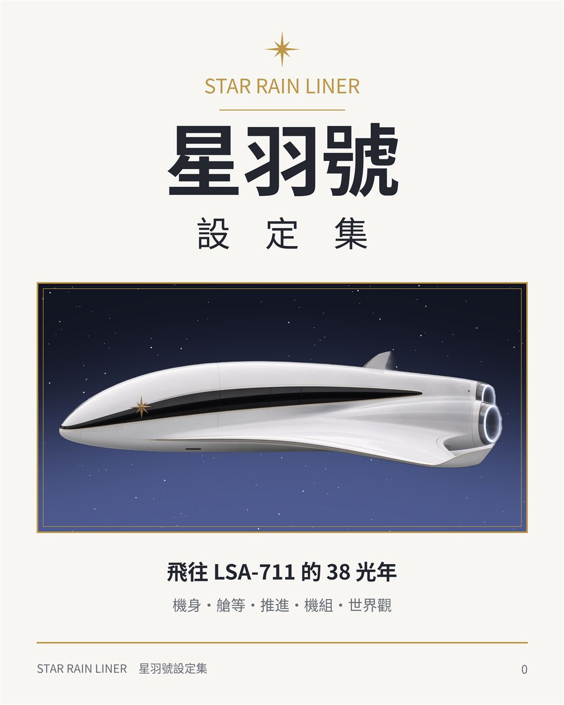

艙房A 生活隨筆 · 2026-10-30 07:00 UTC+8
這顆數位星球，開始有接收訊息的功能了 📡
嗨，讀者（旅人） 你／妳好：
昨晚，準備要睡覺前，我的Gmail信箱收到兩封來自 38 光年外的傳訊。
一封寫著：「 我是星羽號的座艙長 Ginni，很高興與您一期一會。 」
另一封寫著：「 我是星羽號的機長 Julian，我從 38 光年外的星球傳訊息。 」
當然，兩封都是我自己傳的（笑）。一封用電腦，一封用手機，只是為了確認這個新功能真的會動。
最近十幾天，我利用下班時間，和 AI 一起把腦中的許多想法和成品，蓋出了一個小小的網站（LSA-711 星球）。
它不只是文章的另一個存放處，也放了一些在 LinkedIn、Vocus 或 IG 上都看不到的東西：
- 賽博創界視覺設定集：雙宇和子琦的角色檔案、星羽號的機體與制服設定，還有幾本可以一頁一頁翻的相簿
- 四個小遊戲（試映版）：猜猜這句話是誰說的、替他們選一句回答，或跟著五層提問走一遍自己的事
- 帶走五層提問：一段可以直接複製、貼給你常用的 AI 的提示詞，讓它不再急著給答案，而是一次只問你一個好問題
- 全部傳訊：目前發出的 64 則傳訊（截至2026年10月30日），依不同艙房分類，整理在同一頁

以及剛剛新增加的功能「 📡 傳訊給我 」。
不需留下真名，也不需要有什麼正事。
讀了哪一篇想到什麼、想問五層框架怎麼用，或只是想說一句「 我也是這樣想 」，都可以。
這個功能會透過Gmail自動傳送給我，訊息也只有我自己看得到。
我會盡量看每一則，雖然不一定每則都能回覆。
想得比較深的人，常常不是沒有話想說，而是找不到一個不用解釋自己的地方。
希望這個小小的收訊站，能讓開口與交流這件事，變得輕一點。
（這裡不是即時諮詢。如果你／妳的情緒或處境正在危險之中，請撥 1925 安心專線、110 或 119。）
舊雨新知，一期一會。
In this digital ocean of stars, we are not alone.
🔗 個人網站的連結放在第一則留言
讀完有什麼想說的？不用真名也可以。📡 傳訊給我 →